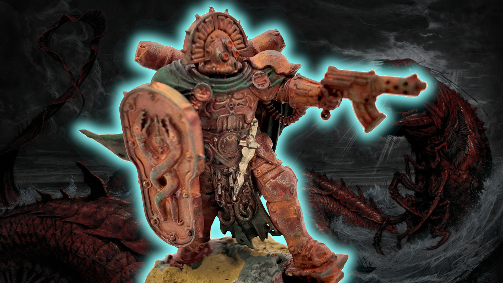

Trench Crusade: Carcass Front is the holy grail of skirmish wargames
Our Verdict

Mind-blasting art, tantalizing lore, excellent miniatures, and two compelling campaigns - Carcass Front is high octane rocket fuel for your imagination, and a perfect introduction to Trench Crusade.
- Extremely evocative art and lore
- Excellent minis
- Two very different, equally creative campaigns
- Some typos
- Could use more onboarding information for new players
No miniature wargame release in 2026 has excited me as much as Trench Crusade: Carcass Front. I'm on record as an excitable man - I was pumped for Warhammer 40k 11th edition, delighted when Starcraft rolled out on store shelves, and indie oddballs like Sun Rot and Repent Ye Foolish Gods! show there's plenty of vigour beyond the mainstream. Carcass Front has the boundless creativity of an indie zine, delivered with all the polish of a best-in-the-business product launch. If you have any interest in skirmish wargames or heavy metal world-building, you owe it to yourself to check this one out.
The Carcass Front was first pitched during the 2024 Trench Crusade Kickstarter campaign as a digital-only PDF expansion that would give players a narrative-heavy map campaign focused on a single warzone. The book that has been delivered to backers, and printed as the hardback volume included in the Carcass Front box, is more ambitious and accomplished than we could have imagined.
I've had a review copy of the Carcass Front box for several weeks now. I've built and painted the models, read the rulebook cover to cover, recruited a buddy and started playing through one of the two campaigns. I'm going to describe a lot of ways that it's a brilliant product - one or two in which it's a bit flawed - but what I want to emphasize now is how inspirational it is. This set has captured my imagination, and when I have to turn my attention to the next review, I know that I will struggle to let this one go. It's just that damn good.
A brief intro to Trench Crusade
The rules for Trench Crusade are available to download for free from the game's website, but I'll describe the core systems here briefly for the benefit of anyone who is looking at Carcass Front as their entry point to the game.
Trench Crusade's rules were principally designed by Tuomas Pirinen, author of the revered fantasy skirmish wargame Mordheim. This will sound blasphemous to long time gamers - I think Trench Crusade is a far better game, and one of the best skirmish wargame systems out there.
The rules have a simple core. Players alternate selecting models to activate, taking as many unique actions as they want to during a model's activation. Some actions require a Success Roll: the player rolls 2D6 and needs a seven or higher to succeed. Some actions are Risky, such as Dashing for additional movement, using cumbersome weapons, using special powers, and so on. Failing the Success Roll for a Risky Action immediately ends the model's activation.
This tiny rule feeds into many interesting strategic and tactical decisions. Take the Dash action. If a model is completely hidden from the enemy, you could Move out of cover, take a shot, and trust to fate that you'll be able to Dash back to safety; the alternative is to attempt to Dash first, guaranteeing your model stays safe at the risk of achieving nothing during your turn.
Thanks to the Dash, models can move substantial distances, keeping them relevant to the game wherever it moves on the table. Yet that movement isn't reliable, making it very hard to coordinate an advance across multiple troops. I could go on about the tactical nuances of Dash, but the point here is that the game is tactically deep but procedurally simple.
Success Rolls are modified by models' stats, abilities, weaponry, and circumstances such as a penalty for shooting at a target in cover or at long range. Bonuses add +Dice to a roll, which let you roll extra dice and select the two highest results for your total; penalties add -Dice to the roll, which force you to select the two lowest numbers. +Dice and -Dice cancel one another out, and most of the time you're making a straight roll, or with a single +Dice or -Dice.
Models have incredibly slender statlines, with just a movement speed, +Dice or -Dice stats for melee and for ranged attacks, and their armor value (which is modified by equipment). The statline may look spare; in practise it's efficient. Many of the differences between individual models and warbands come from their choice of equipment, and the one or two unique abilities that most models have.
Harming a target involves a variant of the Success Roll called the Injury Roll. This is a 2D6 with +Injury Dice bonuses or -Injury Dice penalties, but the final result is modified down by the target's armor value. A result of 9-12 will kill a model outright; most warband leaders and big bruiser models also have the 'Tough' keyword, which will save them from death once. Thanks to the bell curve of results you get when rolling two dice and taking the sum, unarmored models fall very easily, while those in the heaviest armor are likely to survive multiple attacks, likely only suffering marginal results like being knocked down or receiving Blood Markers.
Blood Markers are the last neat little feature of Trench Crusade that I'll mention. These stick to a model when it suffers non-fatal damage. They don't directly impair it; instead, each marker can be spent by the opponent, either adding a +Injury Dice to an Injury Roll against the target, or inflicting a -Die on a Success Roll that model attempts to make.
If you can pile up six Blood Markers on a model (or three on a Down model) you can spend them all to upgrade an Injury Roll against it to a 3D6 Bloodbath Roll. Blood Markers and Bloodbath Rolls are basically essential to take out the biggest targets, but it's quite common to spend them defensively, hampering an enemy's combat effectiveness or trying to stop it Dashing to an objective - more interesting choices arising from a very simple system.
That's the core of the rules for Trench Crusade. It's a small but powerful engine, and because it's so light, the designers can go absolutely wild creating scenarios and warbands dripping with custom rules without overwhelming the player. Carcass Front is a good introduction to that system, but not a frictionless one.
As a starter set
If there's one area where Carcass Front needed reinforcement, it's as an introduction to the game for new players. Don't mistake that for harsh criticism - this box isn't advertised as a starter set, and despite that it's still quite serviceable in that role. Still, this is the product that game store owners are going to suggest to new players, and more could have been done to accommodate them.
The box comes with dice and a very good set of plastic tokens, and dedicates a stack of nice, letter-paper sized card handouts to onboarding new players. These consist of the quickstart rules, a starter scenario, and reference guides with rules for the three models each faction will use in that scenario. For the full core rules you need to download the Trench Crusade rulebook - free, yes, but also stuck on your computer, phone, or tablet. It's a shell crater right in the path of new pilgrims headed towards the frontline.
Actually setting up a suitable battlefield for Trench Crusade is another challenge for new players which this box doesn't much help with. It contains a few small pieces of thematically appropriate plastic terrain, but you'll need a lot more. Likewise, you can download an assembly guide for the miniatures, but the box itself doesn't have any painting advice or terrain-making tips. All told, new players only get basic training, and have to gather quite a lot of essential supplies for themselves if they're going to join the war.
Where Carcass Front excels is in firing up new recruits with the will to fight. The Carcass Front rulebook is packed with the juiciest lore I've encountered in a miniature wargame for decades. In fact it's so good, I dedicated another entire feature article to raving about it. While the narrative scenarios and map campaign in the book come with warnings to new players saying they should get familiar with the basic game first, I don't think they'll actually scare people off, because they are conspicuously really cool.
If Factory Fortress decides to tailor its next narrative campaign better to the needs of brand-new hobbyists, it has a pretty clear path. What it's nailed on the first try is the irreplaceable part: a spark of inspiration that lights a fire inside a hobbyist and turns them into a fanatic.
The warbands
Carcass Front includes two playable warbands, the Heretic Naval Raiders and Procession of the Sacred Affliction. The sculpting team under James Sheriff has done an excellent job realizing the setting's gnarly artwork in plastic. Building them was generally easy, though there are a few challenging multi-component joins when it comes to connecting double-handed weapons. The resulting poses are dynamic, yet also well balanced on the tabletop.
The kits are monopose but have two loadout options for each model, and I'm genuinely tempted to buy a second box of whichever warband I take forward in the future. There isn't a recommended starting warband list inside the box (though the digital instructions now include one), so I built both factions following the vibes. Happily, when I checked what I'd built against the points costs in the book I found both worked perfectly as 700 crown starting warbands. When these kits are released as standalone models you'll be able to buy one box and will have a playable force.
Both the Raiders and the Sacred Affliction appeared as variants of other warbands in the Trench Crusade rulebook. Here they're upgraded to full warbands in their own right, complete with their own variants. I'll try to keep references to the basic warbands minimal for the benefit of anyone new to the game.
Heretic Naval Raiders
The Heretic Naval Raiders are the elite stormtroopers of the fallen, devil-worshipping nations. You get just seven models in the starter set. Their warband rule grants every model a +Dice on Dash rolls, making them extremely fast and maneuverable. If they weren't fast enough, you can upgrade several models to Infiltrators for even more early game pressure.
The basic Heretic Naval Raiders are unexceptional, but you can upgrade two out of the four in the box to Legionnaires, and improve either their melee or ranged prowess. They get cheap access to extremely dangerous submachine guns. The kit allows you to build one with a grenade launcher, an option I heartily endorse.
Their Captain - an elite warrior with the magical ability to puppeteer enemy models - is modelled wearing hefty reinforced armor, and can be equipped either with an armor-piercing Wrecker's Torch, or a shield and submachine gun. I built the latter option. In the test campaign I'm playing, my opponent has begun upgrading his Captain with ever more defensive skills, to the point it seems mathematically improbable I'll ever kill him.
The box contains another heavily armed trooper in the form of the Anointed, a Raider who undertook a profane pilgrimage to hell itself, emerging scarred but empowered. Then there's a Drowned Chorister.
The Drowned Chorister is an absolute bastard. Useless at range but a fiend in melee, this once-drowned soul heard something he shouldn't have in the afterlife, and returned from hell singing the song of the deep. As well as causing Fear (which makes him hard to hit in melee), he generates an eight inch aura that penalises all enemy success rolls.
The Chorister compensates for the Raiders' limited numbers by degrading the opponent's ability to fight and Dash, and - unlike the basic chorister in the main Heretic list - the Drowned Chorister has a unique 'Leviathan Bell' upgrade that allows it to climb or jump without making Risky success rolls, making it a particular nuisance to root out.
Three other units are available to Naval Raiders warbands which aren't present in Carcass Front. The Sea Hag is an artificial life form that summons mines from the weapons factories of hell, and can either yeet them at her enemies or seed them across the battlefield. The Abyssal Commando is an assassin that can completely disappear into cover or areas of open water. Then there are the bedraggled Wretches, pathetic slave infantry that you're most likely to take to bulk up your model count in a list that goes very heavy on elite infantry.
The naval raiders' advantages and armoury lean towards a close-ranged shooting force with one or two melee bruisers, though their superior speed means you can push for a more melee-oriented force should you choose. If you want to do that, you should look at the Leviathan Shoal variant warband - a group of shark cultists with lethal melee prowess that only increases the more blood there is in the water.
The other warband variant is the Drowned Choir, a jellyfish shoal of Drowned Choristers and their mind-controlled wretch followers. This trades in almost all of the list's direct hitting power for an oppressive aura of fear, and is led by a massive Leviathal Chorus that makes all enemy success rolls within eight inches into Risky success rolls, a beast of a control tool that will paralyze the opponent's attempts to achieve mission objectives.
The Procession of the Sacred Affliction
Blessed lepers and holy healers from the order of St Lazarus, the Sacred Affliction is a melee-centric warband with nine bodies in the starter set. They're a more synergistic force than the Naval Raiders, with their elites pushing their all-too-human Leper Pilgrims beyond their mortal limits.
The warband is led by a Lazarist Prophet who can stir up his flock to rush towards the enemy with fiery oratory, or miraculously heal their wounds with. He's also a dab hand when it comes to swinging an anti-tank hammer.
If he's the carrot, the Lazarist Castigator is the stick. This merciless taskmaster will get downed friendly models back up on their feet to keep the advance going, and if that's not enough, he can flagellate a friendly model (potentially to death) for slightly esoteric benefits. The model can be built wielding a huge axe or carrying a colossal Punt Gun, the bastard lovechild of a shotgun and an elephant rifle, and the only seriously scary ranged weapon in the Procession's arsenal.
The bulk of the warband is made up of Leper Pilgrims, of which there are five in the box. These don't have much formal weaponry, but the models in this kit have mustered up a range of dangerous melee equipment and can be built with up to two ad-hoc flamethrowers.
They're so likely to die during a game that the designers let you resurrect them as undead Martyr Penitents. This only shows up in campaign games, but it's a fantastic mechanic - you have to pay to resurrect the dead trooper, but retain all its gear, and they return from death harder to kill and even more frenzied than before.
Stigmatic Nuns are fast moving warriors who can regenerate from their wounds and transmute their suffering into blessings. They're the model you're most likely to thrash with your Castigator. I armed mine with an anti-tank hammer, and my opponent is growing to fear her suicidal dashes with the hazardous armor-piercing weapon.
The last model in the box is an unfortunate ecclesiastic prisoner strapped into a 'Minenhelm' martyrdom device. That's a suicide bomb shaped like a naval mine that will absolutely, definitely kill them, and perhaps take out some enemy models into the bargain.
Two really big bruisers are available to the Procession, neither of which have models in the box. Communicants are faithful who have consumed the flesh of a metachrist, transforming them into divinely inspired supermen. They're hard to kill, lethal in melee, and can interpose their regenerating bodies between their allies and incoming attacks.
Then there's the colossal Anchorite Shrine, a medieval war mech powered by the death throes of a pilgrim interred in its spiked cockpit. Not only is it a lethal melee threat, you can kill one of your own troopers and lash them to the sacred war machine's Catherine wheel where they will serve as ablative armor for the duration of the battle. It is, suffice to say, extremely metal.
The Procession list is a variant of the Trench Pilgrims from the core rulebook, and for the most part it's quite similar, albeit with worse access to ranged weapons and foregoing the protection of Iron Capirotes. Unlike their standard brethren, the Procession carry heavy millstones with which to drown their foes in the trench mud, granting them a bonus die to Injury Rolls against downed enemies. It's a situationally useful ability, but if you're picking this warband over the basic Pilgrims for any reason other than looks, it will probably be for their unique upgrades.
One Pilgrim or Castigator in the Warband can be inspired by the Wrath of God, making them completely immune to Blood Markers, strong enough to wield massive weapons one-handed, and so insanely zealous they can't wear armor or wield ranged weapons. For something comparatively subtle but equally impactful, there's the Ragged Vestments armor option, which provides no protection but makes the wearer better at Dashing.
The equipment options in the box set emphasise other ways to make your warband faster. One Leper Pilgrim can be built with a musical instrument, a piece of common equipment that generates an aura that improves your models' ability to Dash. Once you've earned some Glory Points in a campaign, you can spend them on Bells of Warding, which are functionally a second musical instrument, and come as a model build option for the Lazarist Prophet.
There are two variants of the Procession which take the focus on melee violence in different directions. The Knights of Saint Lazarus eschew both Communicants and Castigators in favor of Leper Knights, elite melee fighters whose wounds are healed by the blood of the foe. The Procession of the Blessed Flock is even stranger, a team of Castigators shepherding a flock of lost Communicants who have survived the deaths of their original pilgrim bands. The Communicants are costly and struggle to function once separated from their shepherding Castigators, but they're also hard as nails and incredibly dangerous.
Just going off the models in this box set, these are two very solid starter warbands. Despite both starring (mostly) ordinary humans, they feel distinctive and complimentary: one an elite special-forces unit, the other an unruly mob of fanatics who thrive on pain. The Heretics have reinforced armor, the Faithful have Anti-Tank Hammers; the Pilgrims have numbers, the Raiders have submachine guns. The balance of power really lies in the terrain you're fighting over; fortunately, Trench Crusade's many scenarios invite you to mix that up regularly.
The Path to Leviathan campaign
The first of the two campaigns in the Carcass Front book is designed for two players, and consists of five narrative scenarios that you'll play in order. Whether you play them straight through or intersperse them into a regular Trench Crusade Campaign is up to you. I've started a campaign with a buddy alternating between games generated using a scenario generator included in Carcass Front and the narrative missions.
The plot is, like everything else in the book, metal as hell. Leviathan was once a high lord of hell, cast down by the almighty and shackled to the ocean floor well before the opening of the Jerusalem hellgate. A prophecy states that when this great beast is slain the faithful will devour its flesh; the leper prophet Bartolomeo is agitating the trench pilgrims to make it happen. Opposing him is War Priest Charon, who seeks to slay the beast himself to claim its power and ascend within the court of hell, while leaving its carcass to rot in defiance of god's plan.
They're leaving the dirty work to your warbands - the closest they come to the action is appearing as new options for Warband Patrons with a list of Patron Skills your characters might learn during the campaign. Iron Sultanate players can choose a Patron from the House of Wisdom, which regards both Bartolomeo and Charon as equally insane. Whatever your reasons for fighting, over the course of five missions you'll amass the knowledge and resources needed to summon the Leviathan and, just maybe, slay it.
The missions start off relatively tame. An expedition to the ruins of the cursed city of Nineveh Novus - condemned by heaven and hell alike - sees you search for tablets that hold the secrets to summoning Leviathan, while mad priests assault you from the ruins and an aura of doom spreads from the center of the board. Mission two sees you venture into the great corpse storage warehouse of Domus Demetrius, collecting suitable bait for the great beast, while unclean things stir in the charnel piles.
Mission three is inspired. To catch a beast as large as Leviathan you need one hell of a harpoon, and your warbands intend to make it from the wrecks in the vast tank graveyard known as the Steel Necropolis. The twist is that the rusting deity known as the God of Tanks does not like your grave robbing, and it's hurling tank wrecks at you while you work.
You'll work out where these solid steel projectiles land by dropping paper markers onto the battlefield from a two foot height, and then replacing them with tank wrecks or shell craters if you have the models spare.
Mission four determines who can actually win the campaign overall, since it's a battle for control of the great railway gun called the Sword of God, essential for hurling your spear into the flank of the Leviathan. Existing Trench Crusade communities may already own an armored train for a base game scenario, but there are print out templates on the website for players who don't already own one: alternatively, Factory Fortress is selling an STL for home 3D printing.
The conclusion of the campaign comes at the altar of Leviathan, as both players attempt to call the great beast from the depths and - if they've got a tank-metal harpoon loaded into a railway cannon - haul it to the earth. This takes place on the water, and each time the ritual brings Leviathan towards the surface, a tidal wave rushes across the field, knocking down everyone standing on the beach and pushing them one way across the board at the start of the turn, then dragging them back towards the maw of the ocean at the end of it.
The Carcass Front campaign
The Carcass Front campaign is a slightly more advanced version of the regular campaign system in the Trench Crusade rulebook, which modifies scoring, earning income, exploration, and sundry other details. Central to this is a campaign map which includes dozens of keyed locations with distinct routes between them.
Starting from one of a few entry points on the map, players can initiate battles in zones that connect to the areas they've already scouted (but can accept challenges anywhere). Each zone specifies which mission you'll play there and what kind of battlefield you'll fight over, and a few have additional special conditions.
Different battlefields provide different resources, which in turn gate access to different post-game exploration tables - some are better for resources, others for glory items, others for campaign victory points, and so on. There have been a couple of nice tweaks to the exploration system that returning players may notice. Unlike the base campaign, you'll always find something interesting when exploring. And when one player finds a merchant and unlocks the ability to purchase Glory Items, that transfers to everyone in the campaign - the finder gets rewarded with bonus victory points for the campaign.
There's one other small but characterful addition. After you've played a battle as a defender, there's a chance you may be contacted by the mysterious airmen of Rudolf's Folly, a phantom airstrip that has appeared and disappeared for centuries. This gives you the option to hire their services in a future game, and pay for either a targeted strafing run or a considerably less accurate bombing mission. It's not exactly an elegant addition, but it seems appropriate for the chaos of this war.
The box set contains a pad of campaign tracking sheets, necessary aids for this campaign's more involved admin. As well as victories and losses you'll track how often you've been the aggressor, which areas of the map you've scouted and where you've successfully established outposts, and all the resources you've gathered - these may in turn unlock further campaign bonuses. Players also get one of two secret campaign objective cards to pursue throughout the campaign, which may push you in a specific direction.
I haven't begun to test this campaign mode. It is unquestionably more involved than the basic Trench Crusade campaign. It's not a map campaign in the sense of Risk-style area conquest and your progress doesn't represent conquest or lock out other players from moving through the same zones - but the map has a meaningful impact on both your games and your campaign progress. If you have a Trench Crusade group and a place to pin up this map, I think you'll be laughing.
Final thoughts
When I try to find flaws in Carcass Front, the list is short. I found three sense-changing errors that were missed in proof-reading - one in the quickstart rules, one in the melee stat for the Anchorite Shrine, and then an inconsistency between two descriptions of the post-game procedure for Outposts in the Carcass Front campaign. I can't find any bad design decisions. Factory Fortress could have done more to make the onboarding experience smoother for new players, but the set doesn't fail in that regard, it's merely good.
As a package that will inspire people to play wargames, Carcass Front is unparalleled. There is so much for the imagination to feast on, in the art, lore, the rules for the warbands and design of the narrative scenarios. The industry expertise in the Factory Fortress studio is evident by how efficient and fit-for-purpose everything in the box is, but nothing here has been pre-digested for you.
That is essential. Wargaming is a hobby about doing stuff, whether that's theory crafting warbands, converting models, constructing elaborate scenery for unique missions, marshalling friends for a campaign, or simply getting together for a game. Good miniature wargame products leave gaps for the player to fill, not because something has been forgotten or delivered broken, but because wargames come alive when we bring part of ourself to it. The best miniature wargame products inspire you to do things you never knew you wanted to do.
Since I started testing Carcass Front, I've been trawling MyMiniFactory for suitable terrain STLs. I'm running my FDM printer any time it won't interfere with people's sleep - a machine that I have a toxic relationship with, and normally use with the reluctance of firing up a bandsaw without a safety guard. When I finished painting the warbands from the box, I immediately grabbed a model from my mountain of grey plastic, and converted it into a Communicant for my Procession of the Sacred Affliction.
Trench Crusade: Carcass Front is a masterclass in imaginative game design. If you're looking for a way to start playing, it's excellent. If you're part of a group that plays Trench Crusade, you need a good reason not to get this set. If you're seeking a gift for an 11 year old - and have a liberal idea of the amount of gore it's suitable for them to see - it's the kind of product that will start a lifelong obsession.
If you pick up Carcass Front, I'd love to see what you do with the models and hear tales of your great battles in the Wargamer Discord Community.
Originally published on Wargamer.


{kind=link}
{kind=link}
{kind=link}
{kind=link}
{kind=link}
{kind=link}
{kind=link}
{kind=link}
{kind=link}
{kind=link}
{kind=link}
{kind=link}
{kind=link}
{kind=link}
{kind=link}
{kind=link}
{kind=link}
Leave a Comment